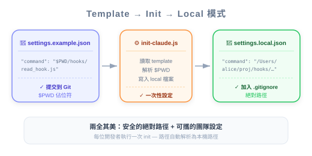

圖：安全性與可攜性的取捨 — 絕對路徑安全但綁定機器；Template + init script 可兩全其美。
| 项目 | 细节 |
|---|---|
| 考试领域 | D3 — Claude Code Configuration & Workflows (20%) |
| Task Statements | 3.2 (custom commands & hooks), 1.5 (Agent SDK hooks for tool call interception) |
| 来源 | claude-code-in-action / 05-hooks / Lesson 17（纯文字课） |
Hook 脚本应使用绝对路径以确保安全性（防止 path interception 和 binary planting 攻击），但绝对路径破坏跨机器的可移植性 — 解法是 settings.example.json + init script 模式，用 $PWD 占位符替换为机器特定的绝对路径。
你已经知道如何定义和实现 hook（Lesson 15-16）。这堂课解决一个真实世界的部署问题：安全最佳实践（绝对路径）与团队协作（共享设置文件）之间的紧张关系。
💡 iOS/Swift 类比
这就像 certificate pinning 的取舍：硬编码 hash（安全但证书轮换时坏掉）vs 从 config 加载（灵活但需要安全的分发机制）。你两者都需要 — 解法是自动化的 setup 步骤。
// ❌ 相对路径（安全风险）
"command": "node ./hooks/read_hook.js"
// ✅ 绝对路径（安全）
"command": "node /Users/alice/projects/queries/hooks/read_hook.js"
绝对路径缓解两种攻击向量：
| 攻击 | 描述 | 绝对路径如何帮助 |
|---|---|---|
| Path interception | 攻击者在 $PATH 中较早出现的目录放入恶意脚本 |
绝对路径完全绕过 $PATH 解析 |
| Binary planting | 攻击者在工作目录放入同名恶意文件 | 绝对路径指向确切的文件 |
⚠️ 安全性不可妥协
圖：安全性與可攜性的取捨 — 絕對路徑安全但綁定機器；Template + init script 可兩全其美。
CCA 考试将安全最佳实践视为正确答案。

settings.example.json（commit 到 git）{
"hooks": {
"PreToolUse": [
{
"matcher": "Read|Grep",
"hooks": [
{
"type": "command",
"command": "node $PWD/hooks/read_hook.js"
}
]
}
]
}
}
scripts/init-claude.js（commit 到 git）读取模板 → 替换 $PWD → 写入 settings.local.json
settings.local.json（gitignored，自动生成）带有机器特定绝对路径的输出文件。永远不 commit。
📝 为何对团队很重要
此模式确保：安全（绝对路径）+ 可移植（模板适用任何机器）+ 自动化（不需手动编辑路径）+ 版本控制（模板追踪；生成文件不追踪）
| 文件 | 用途 | 在 Git？ |
|---|---|---|
settings.json |
团队共用设置 | 是 |
settings.local.json |
带机器特定绝对路径的生成文件 | 否（gitignored） |
| ❌ 错误做法 | ✅ 正确做法 | 为什么 |
|---|---|---|
| Hook command 用相对路径 | 用绝对路径 | 相对路径易受攻击 |
Commit 带绝对路径的 settings.local.json |
Commit 带 $PWD 占位符的 settings.example.json |
绝对路径是机器特定的 |
| 每个开发者手动编辑路径 | 用 init script 自动生成 | 手动编辑容易出错 |
| 跳过安全建议 | 永远用绝对路径 | CCA 考试期望安全最佳实践 |
团队想在所有开发者之间共享 PreToolUse hook 配置。推荐方法是？
settings.local.jsonsettings.json$PWD 占位符的 settings.example.json 和生成 settings.local.json 的 init scriptsettings.local.jsonCI pipeline 的 hook 配置用相对路径。安全审计标记为漏洞。正确修正？
$PATHsettings.local.jsonsettings.json 加硬编码的路径新开发者 clone 项目后 hook 不工作。有 settings.example.json 但没有 settings.local.json。原因？
npm run setup 从模板生成 settings.local.jsonsettings.example.json